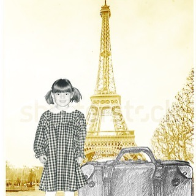

“Našťastie som bola v Paríži dosť dlho na to, aby som pochopila, o čo ide. Aby som zistila, čo je to HÉRITAGE a že francúzsky sú veľké lokálpatriotky.”
•Z kapitoly O škaredej hnedej kabelke•
#bohemky #kabelky #heritage #prezeny #parrisienne #modealaparisienne #louisvuittonheritage #louisvuitton #dreambag #tojetakefrancuzske @maestrokatastrof #paris #jetaime